Retrieve Rolling Report Data Sources
This procedure collects Sam's data-source retrieval notes for recurring rolling reports. Use it when a report needs a fresh weekly source file before the launcher can update a cache or build the final workbook.
The screenshots are reference images from the original PDF directions. Follow the written steps below for the working process, source folders, and launcher actions.
Readerlink Existing
Report: Readerlink Rolling Reports
Source PDF: F:\ANALYSIS\Finance\DataWarehouse\Atelier Readerlink\Readerlink_DataSources.pdf
Working source folders:
- Sales workbooks:
F:\ANALYSIS\Finance\DataWarehouse\Weekly reports\2026\Readerlink - Inventory workbooks:
F:\ANALYSIS\Finance\DataWarehouse\Weekly reports\2026\Readerlink\Inventory - Cache folder:
F:\ANALYSIS\Finance\DataWarehouse\Atelier Readerlink\cache
Steps
- Retrieve the latest Readerlink sales export for the new reporting week.
- Before saving/exporting, verify the selected week is correct and no extra filters are applied.
- Save the sales workbook in the current-year Readerlink weekly source folder.
- Retrieve the matching Readerlink inventory export and save it in the Readerlink
Inventoryfolder. - Run
Retailer Rolling Reports > Readerlink Rolling Reports > Add a new week's data to cache. - Review the selected source files shown by the cache update prompt before confirming.
- Build the Readerlink Rolling Report after the cache update completes.
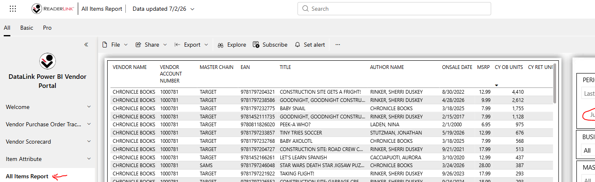
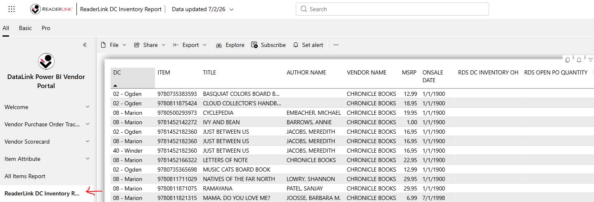
Target NOC Existing
Report: Target NOC Rolling Reports
Source PDF: F:\ANALYSIS\Finance\DataWarehouse\Atelier TargetNOC\Target_DataSources.pdf
Working source folders:
- Sales source folder:
F:\ANALYSIS\Finance\DataWarehouse\Weekly reports\2026\Target NOC\TargetNOC_Sales - Inventory source folder:
F:\ANALYSIS\Finance\DataWarehouse\Weekly reports\2026\Target NOC\TargetNOC_Inventory
Steps
- Retrieve the latest Target NOC sales export for the new week.
- Retrieve the matching Target NOC inventory export for the same reporting week.
- Save each export into its matching Target NOC weekly source folder.
- Run
Retailer Rolling Reports > Target NOC Rolling Reports. - Use the Target NOC menu to update the cache/report after confirming the source files shown on screen.
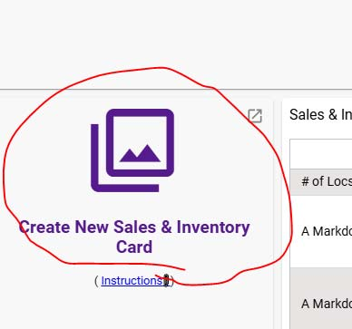
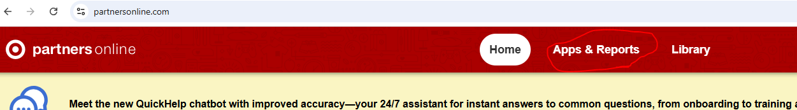
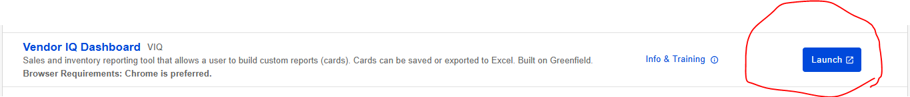
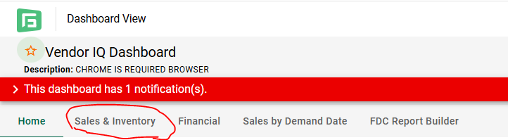
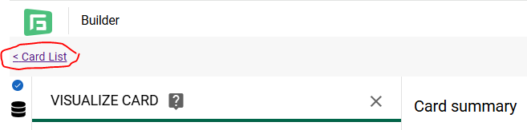
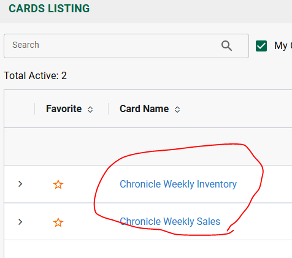
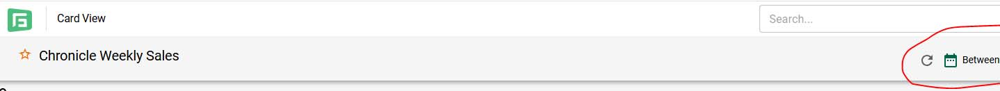
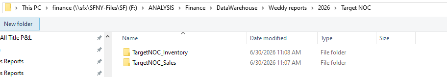
AWBC Planned
Report: AWBC Rolling Reports
Source PDF: F:\ANALYSIS\Finance\DataWarehouse\Atelier AWBC\AWBC_DataSources.pdf
Expected source folder: F:\ANALYSIS\Finance\DataWarehouse\Weekly reports\2026\AWBC
Expected output folder: G:\SALES\2026 Sales Reports\Sell-Through Reporting\AWBC
Steps
- Go to the AWBC reporting portal/source shown in Sam's screenshot.
- Run or download the weekly AWBC sales report for the current reporting week.
- Save the downloaded file in the AWBC weekly source folder.
- When the AWBC rolling report is built, point its cache/update process at this weekly source folder and write the final workbook to the AWBC Sell-Through Reporting folder.
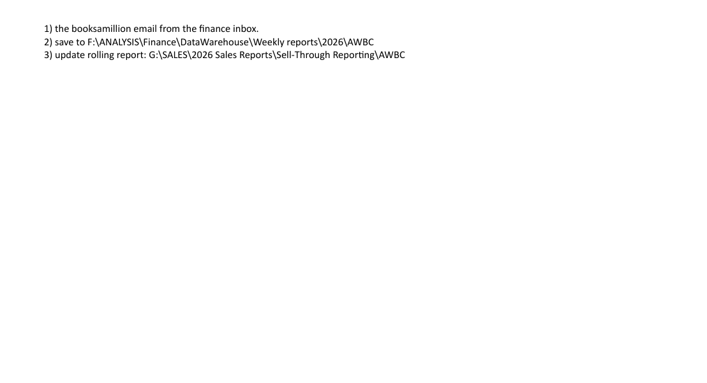
Edelweiss Planned
Report: Edelweiss Rolling Reports
Source PDF: F:\ANALYSIS\Finance\DataWarehouse\Atelier Edelweiss\Edelweiss_DataSources.pdf
Expected source folder: F:\ANALYSIS\Finance\DataWarehouse\Weekly reports\2026\Edelweiss
Expected output folder: G:\SALES\2026 Sales Reports\Sell-Through Reporting\Edelweiss
Steps
- Retrieve the available Edelweiss report from the source shown in Sam's screenshot.
- Before upload/use, remove the date-specific text from the week columns called out in the note. Leave the relevant columns labeled as
Week Endingso the downstream upload/report logic can read both consistently. - Save the Edelweiss source file in the Edelweiss weekly source folder.
- When the Edelweiss rolling report is built, use this source folder for the update process and write the final workbook to the Edelweiss Sell-Through Reporting folder.
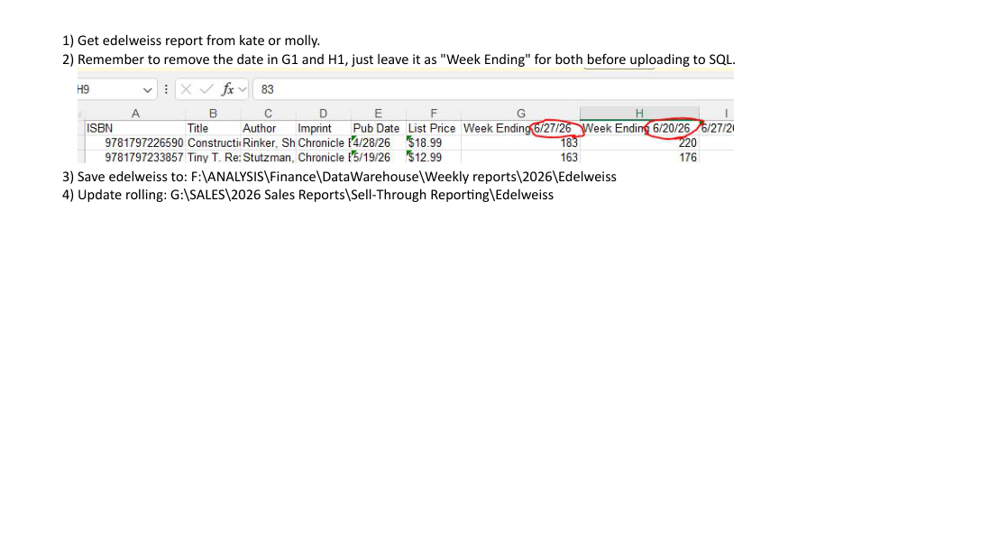
Barnes & Noble Existing
Report: Barnes & Noble Rolling Reports
Source PDF: F:\ANALYSIS\Finance\DataWarehouse\Atelier BarnesNoble\BN DataSources.pdf
Default raw source base: F:\ANALYSIS\Finance\DataWarehouse\Weekly reports\2026\Barnes & Noble
Steps
- Retrieve the new weekly Barnes & Noble raw source files from the B&N portal/source shown in the screenshots.
- Create or use the weekly raw folder for the new week under the Barnes & Noble weekly reports folder.
- Save the sales, inventory, and non-book source files into that weekly raw folder using the current naming convention.
- Run
Retailer Rolling Reports > Barnes & Noble Rolling Reports. - At the folder review screen, confirm the launcher found the expected raw folder and source workbooks. Use
Change raw folderif it selected the wrong week. - Run the B&N process steps in order: refresh/combine raw source data, build working sales/inventory files, then run the final rolling report.
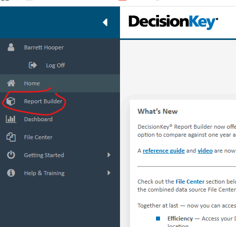
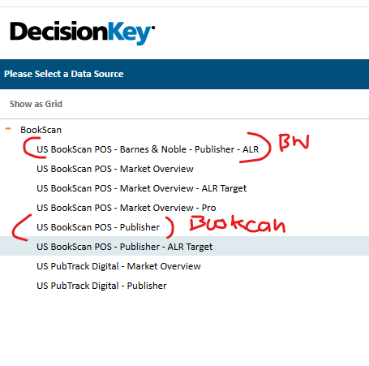
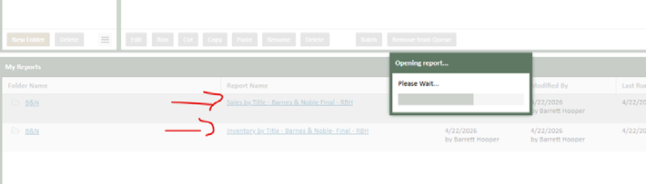
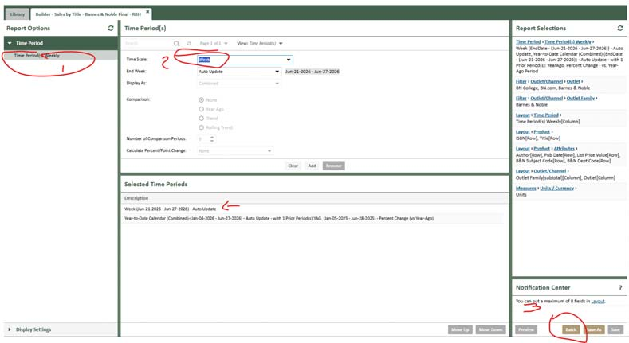
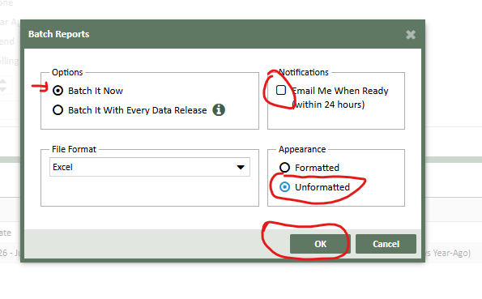
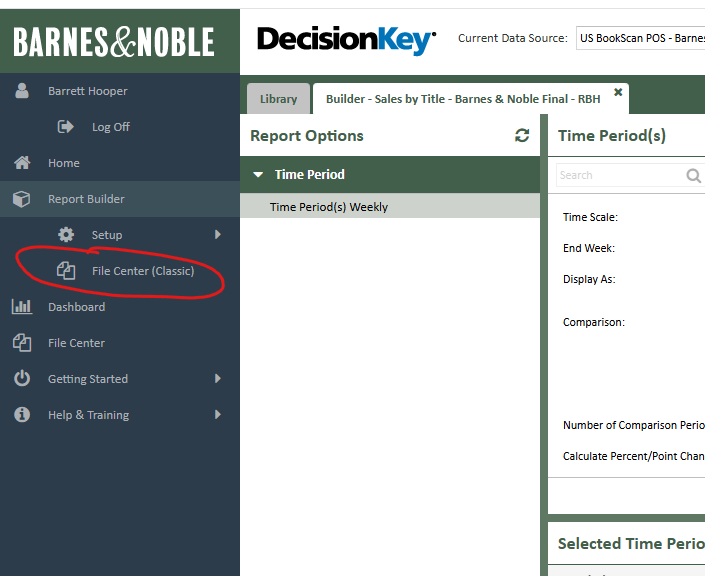
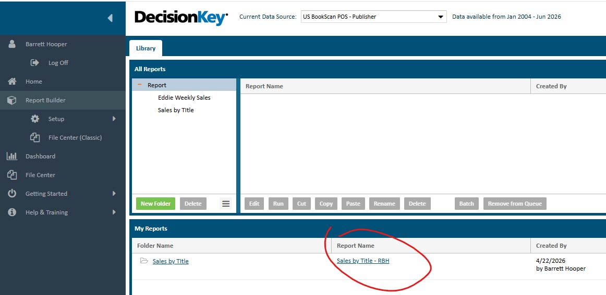
XGap Planned
Report: XGap Rolling Report
Source PDF: F:\ANALYSIS\Finance\DataWarehouse\Atelier XGap\XGap DataSources.pdf
Expected working area: G:\SALES\2026 Sales Reports\Sell-Through Reporting\XGap
Steps
- Run XGap only after the other rolling reports needed by the workbook have been completed.
- Open the current XGap template/workbook from the XGap reporting folder or archive path shown in Sam's screenshot.
- Update the date fields/tabs to the latest reporting week.
- Run the SQL source query and paste/save the output into the
Sellthru/SellIntab called out in the screenshot. - Refresh the workbook's Power Query steps.
- Update the workbook links to the most recent rolling report workbooks.
- When the workbook is complete, save as values and remove all tabs except the final
Sell Listtab before distributing or archiving.
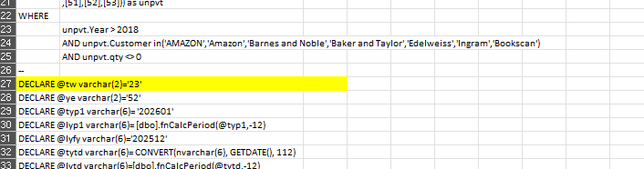
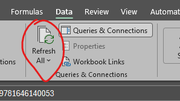
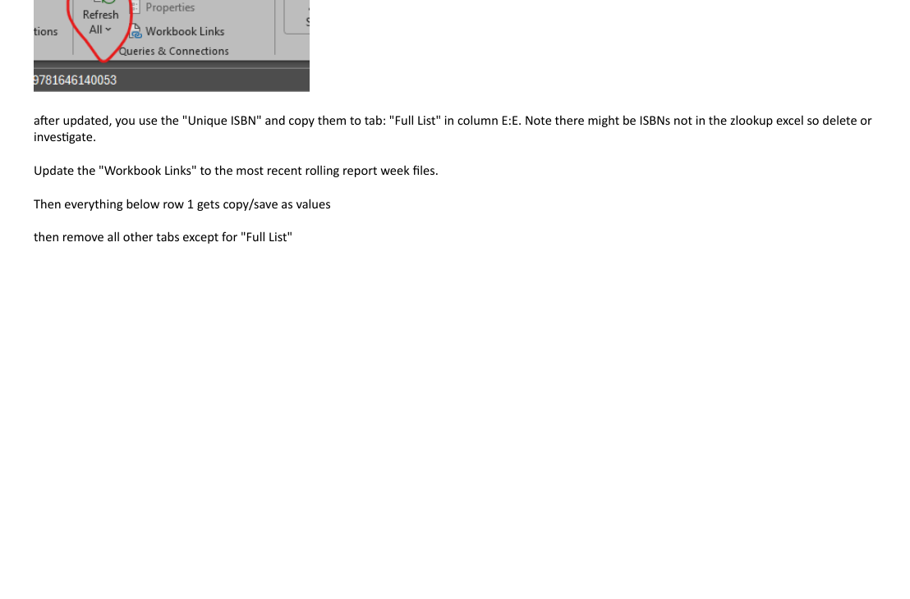
Maintenance Notes
- If Sam sends updated directions, replace or add screenshots under
desk_procedures\procedures\assets\retrieve_data_sourcesand update this HTML page. - For planned reports, update the paths and launcher steps once the report automation exists.
- Keep source files in the DataWarehouse weekly-report folders; keep final generated workbooks in the Sales reporting folders.